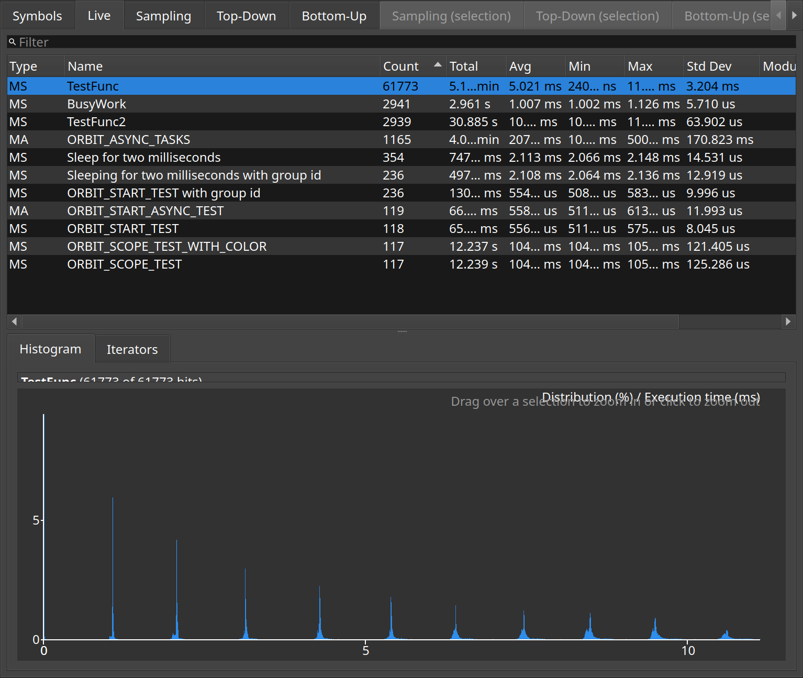

Live functions
One row per instrumented function, with how often it ran and for how long.
The Live tab aggregates every timed function in the capture: call count, total time, average, minimum and maximum. It is the fastest way to find the function worth looking at before going back to the timeline to see when it ran.
Selecting a row highlights every one of that function's slices in the capture window, and the histogram below the list shows how the individual call durations were distributed. The screenshot has the most-called function selected.
